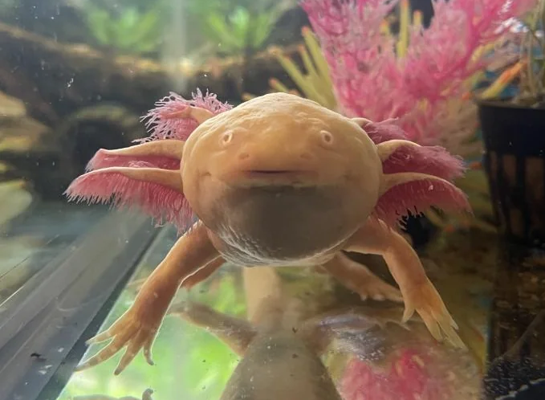

- I was born and raised in Manitoba, Winnipeg. I attended Sarget Park for education from kindergarten to grade 9, where I transferred to Tec Voc high school for the remainder of secondary school. Currently, I’m preparing to take the following year in Sisler’s Create program. I’m aspiring to become an animator in the creative industries and have spent many years of my life devoted to traditional and digital art.

In my free time I still enjoy drawing, reading and watching a variety of books and tv shows with my cats and dogs.